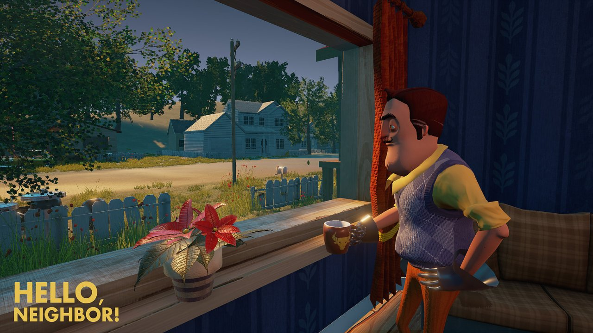
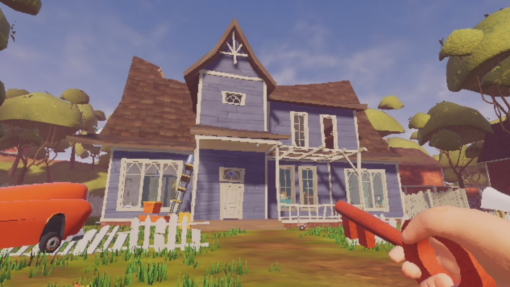
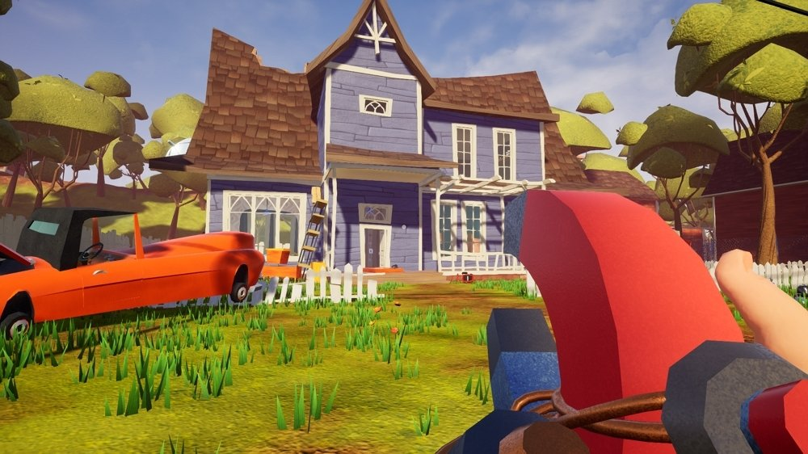
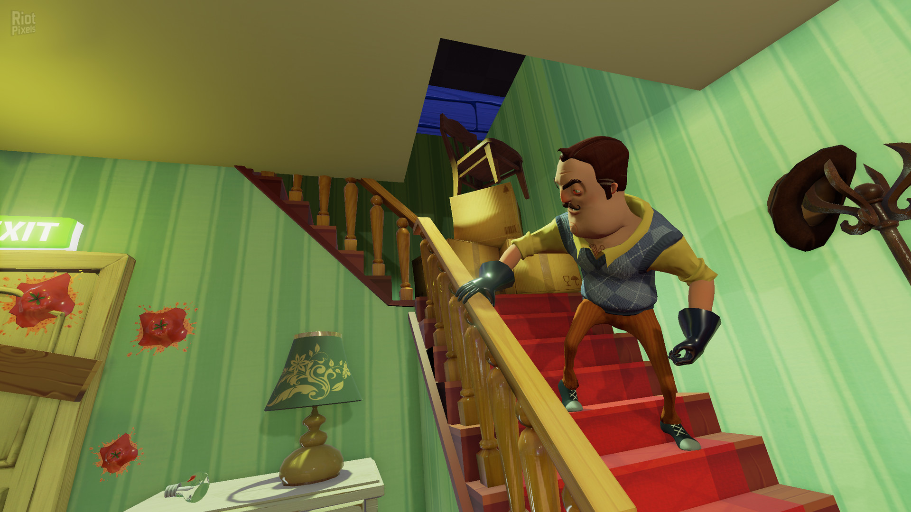
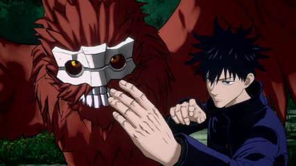

Recomended games
Hello Neighbor
"Hello Neighbor" is a stealth horror game developed by Dynamic Pixels
and published by tinyBuild. In the game, you play as a character who moves
into a new house and becomes suspicious of the strange behavior of your neighbor.
The goal is to sneak into the neighbor's house to uncover the secrets hidden in
their basement.The game is known for its AI system, which learns from your
actions and adapts to make it more challenging for you to sneak around.
It combines puzzle-solving with stealth and has a unique, cartoony
art style. The main objective is to avoid being caught by the
neighbor while solving puzzles to unlock different areas of the house.




|Download| |Available Links|
Hello Neighbor
Jujutsu Kaisen, known for its serialization in Shueisha’s “Weekly Shonen Jump”,
is getting its first console game!
In this 2 vs. 2 action game, aim for new heights by mastering the “Cursed Techniques”
of more than 15 powerful Jujutsu Sorcerers and Cursed Spirits!
Choose your partner and create unique combinations that both complement your play
style and showcase the different cursed techniques each character possesses.
Strengthen your cursed techniques through exhilarating battles, defeat your opponents,
and… domain expansion…?!


|Download| |Available Links|